CRT Monitor Construction
CRT is an acronym for Cathode-Ray Tube , a CRT lamp equipped with an electron gun. In Polish, the word has been adopted a common short name, a synonym for the expression CRT monitor - that is, the designation of computer monitor models whose display is based on a picture lamp called a picture tube. The proper term is a CRT monitor.
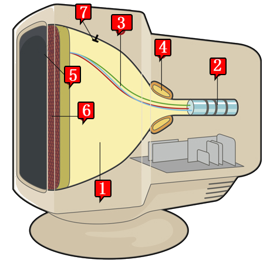
[1] cathode ray tube lamp in the form of a glass vacuum tube
[2] electronic works with beam focusing systems
[3] electron beams
[4] deflection coil
[5] deflection coil
[6] mask
[7] anode
[2] electronic works with beam focusing systems
[3] electron beams
[4] deflection coil
[5] deflection coil
[6] mask
[7] anode
PRINCIPLE OF OPERATION OF THE CRT MONITOR
The principle of creating an image in a color CRT monitor is to send a phosphor layer of three electron beams towards the windshield (one for each component of the RGB color) using three electron guns located at the back of the vacuum tube of the kinescope. These beams are directed by means of a strong magnetic field ( deflecting coils ) so that they hit the appropriate area on the phosphor.Phosphor is a luminous pigment (phosphorus) , a material that has the properties of being luminous when exposed to radiation. When creating an image, the beams sweep the screen along a single horizontal line, called the dial line, from left to right, illuminating the phosphor points and causing them to be lighter or darker depending on the instantaneous voltage controlling the electron department.
Horizontal frequency
frequency at which the monitor draws a single image line, measured in kilohertz [kHz]
After drawing the image line and reaching the right edge of the screen, the beams are temporarily extinguished, after which the deflecting coils direct them to the beginning of the next line towards the bottom of the screen and the process occurs again until the entire screen is filled line by line. When the whole screen is full, the beams are extinguished again, after which the whole cycle of drawing the image begins again from the top of the screen (from the first line).
Refresh Rate (Vertical)
frequency with which the monitor draws the entire screen (all image lines) - given in hertz [Hz]. To avoid screen flicker and eye strain, the vertical image should be drawn 85 times per second (refresh rate 85 Hz)
TYPES OF MASK IN CRT MONITORS
Before the phosphor layer is the so-called mask (ang. shadow mask), which acts as a filter that ensures that the electrons hit the surface of the designated phosphor fields (sub-pixels) - which positively affects the quality of the image.
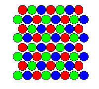
perforated (IBM Delta)
perforated (IBM Delta)
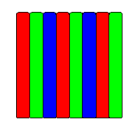
slit
(Trinitron, Diamondtron)
slit
(Trinitron, Diamondtron)
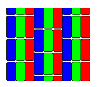
slit-perforated
(NEC Cromaclear)
slit-perforated
(NEC Cromaclear)
Perforated mask
appeared in the first CRT monitors, was developed by IBM. Its biggest disadvantage is too large a surface, which reduces the brightness of the image
Slit mask
was first used in NEC Cromaclear picture tubes. It is a compromise between the two previous solutions - at the cost of a slight loss of image quality, two stabilizing wires were abandoned. Also, the cost of producing this mask is much lower
Slit-perforated mask
frequency at which the monitor draws a single image line, measured in kilohertz [kHz]
Prons and cons of CRT monitors
The choice of monitor type depends most on its intended use. CRT monitors have been virtually completely displaced from the market by liquid crystal monitors, but some of their unique properties mean that photographers still use them.
Prons of CRT monitors
fast response time, multi-frequency (resolution can be changed), faithful color reproduction, large viewing angles.
Cons of CRT monitors
average brightness and contrast of the image, large dimensions and weight of the monitor (hence more difficult to adjust), high power consumption, always existing screen protrusion, refresh rate has a significant impact on image quality and eye fatigue, higher electromagnetic radiation emission.
Selection of CRT monitor parameters
In CRT monitors, the actual screen working surface is slightly smaller than declared by the manufacturer, due to the protuberances of the screen that are always present in a CRT monitor. Even in the latest models with almost flat screens (FST - Flat Square Tube) there are slight horizontal bulges.
Useful screen size
diagonal screen size of the monitor (expressed in inches)
Currently, standard resolutions on CRT monitors are e.g. 1024 × 768 (XVGA), 1280 × 1024 (SXGA) and 1600 × 1200 (UXGA). Due to the ability to display multiple resolutions (multiple frequencies), it is only important that the monitor provides the right vertical refresh rate for high resolution.
Resolution
parameter determining the number of pixels of the image displayed on the screen in the current mode of the computer monitor; the resolution is expressed as the number of horizontal and vertical pixels of the image
In a CRT monitor, a physical pixel arranged on the screen surface does not translate directly into a "computer" pixel understood as the smallest element of the image processed by the graphics card. Most often, when working with a CRT monitor, a single pixel computer image generated by a graphics card translates into several physical pixels of the mask.
Therefore, to semantic distinguish the concept of pixel image sent from the graphics card and the pixel of the actual picture tube introduced the concept of a spot. The smaller the spot, the more densely spaced the elements are, which translates into better image sharpness. The most common spot sizes: 0.2mm; 0.24mm; 0.25mm; 0.28mm.
Dot size on the CRT monitor
distance in [mm] between two pixels (triads) in a given CRT.
CRT monitors have horizontal and vertical refresh rates. The vertical refresh rate tells you how many times the screen is drawn per second. The horizontal refresh rate determines how many times a second an electron beam can draw a horizontal line per second. The horizontal frequency has a very high value (expressed in kilohertz), so from a purely practical point of view it is of little importance.
So when we talk about the refresh rate, we always mean the vertical frequency. Frequencies below 80 Hz will quickly tire your eyes (visible flickering of the image), ideally it should be 85-100 Hz at a given resolution.
Refresh rate in the CRT monitor
determines how many times per second the whole image (all lines) is displayed on the monitor screen; expressed in hertz [Hz].
Construction of the LCD monitor
LCD is an acronym for Liquid Crystal Display - a liquid crystal display is a device whose operating principle is based on a change in the polarization of light due to changes in the orientation of liquid crystal particles under the influence of an applied electric field.
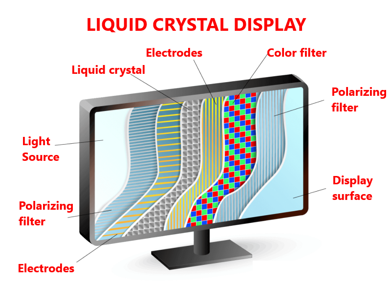
Operating principle of the LCD monitor
The principle of creating an image in a color LCD monitor is slightly different than in CRT monitors. The electron gun has been abandoned, thanks to which the monitor has much smaller dimensions and weight. The light sources are usually thin fluorescent lamps (or LEDs in much more expensive LED monitors). Light is passed through a polarizing filter that passes light waves at a specific phase. Then the stream of light tafia on the filter with horizontal gaps, then passes through the polysilicon layer called liquid crystals and goes to the second filter with vertical gaps.If the light beam is not refracted by 90° through a layer of liquid crystals, this light will be completely retained on the second filter. However, if the light beam refracts by 90° through molecules of liquid crystals, this light will be given to the screen. Liquid crystal molecules are controlled by transistors - supplying voltage causes proper orientation of the particles and refraction of the light beam by 90° (excitation). Each pixel in the LCD monitor consists of three (so-called triad ) sub-pixels corresponding to RGB colors. Each sub-pixel is controlled independently by a separate transistor.
Dead pixel
is a sub-pixel that does not change its color or does not excite - e.g. as a result of a failure of the control transistor - no refraction of the light beam
Division of matrix in LCD monitors
Passive matrices were used in the early days of LCD technology - individual transistors controlled entire rows and columns of pixels. Monitors based on passive matrices smudged (had slow response time, streaks and shadows appeared).In active matrices , each sub-pixel is controlled by a separate thin-film transistor (TFT - Thin Film Transistor)
Twisted Nematic (TN)

The application of voltage causes the liquid crystal particles to rotate to a position perpendicular to the electrode planes on the opposite walls of the screen, which results in blocking the light.
They have a short response time (less than 8ms), but small viewing angles and poor color reproduction.
Multidomain / Patterned Vertical Alignment (MVA)
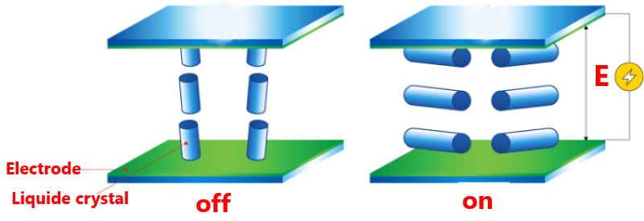
MVA: An oblique (torsional) arrangement of liquid crystal particles was used due to the use of polyamide solutions. Twisting allows to obtain an identical image from wide viewing angles over 170 & deg;).
PVA: technology developed by Samsung as an alternative to MVA (another technological process of their production and parameter values).
PVA: technology developed by Samsung as an alternative to MVA (another technological process of their production and parameter values).
(Super) In-Plane Switching (IPS)
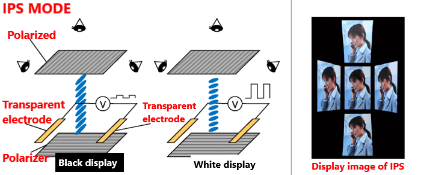
In this matrix, the electrodes are placed only on the back wall, and the liquid crystal particles are not twisted. After applying voltage, the "guiding" of light takes place along the shorter edges of the molecules and the image is visible even at a wide angle. The Super I-PS technology introduces broken electrodes arranged in zigzag lines, which further reduces discoloration for large viewing angles.
Prons and cons of LCD monitors
The choice of monitor type depends most on its intended use. LCD monitors have virtually completely displaced CRT monitors from the market, but it does not mean that they are free from any disadvantages.
Prons of LCD monitors
very good image brightness / contrast, very good image geometry, low power consumption, small size and weight (hence easy adjustment), perfectly flat monitor, much lower electromagnetic radiation emission than in CRT, low importance of refresh rate for image quality.
Cons of LCD monitors
optimal image only for native resolution, average response time, worse color reproduction than in CRT, image quality depends on the viewing angle.
SELECTION OF LCD MONITOR PARAMETERS
In LCD monitors, the screen diagonal is exactly what the manufacturer declares, because the LCD panels have perfectly flat screens.
Useful screen size
diagonal screen size of the monitor (expressed in inches)
LCD monitors have a native resolution - they display an optimal image in only one resolution, the other modes are obtained by mathematically scaling the image, which significantly reduces its quality.
Resolution
parameter specifying the number of pixels of the image displayed on the screen in the current mode of the computer monitor; the resolution is expressed as the number of horizontal and vertical pixels of the image
The pixel size directly depends on the size of the LCD screen and its natural resolution. To calculate the pixel size, simply measure (or look at the specifications) the width of the screen's working surface and divide it by horizontal resolution - e.g. a 19 inch monitor is usually 376 mm wide and its typical horizontal natural resolution is 1280px. So: 376/1280 = 0.294 mm. Pixel size differences for stationary LCD panels reach 16.5%, but when we consider the matrixes in notebooks, the differences reach up to 36%, and that's a lot.
Consider a 17 inch LCD panel with a resolution of 1280x1024 and a monitor one step larger (i.e. 19 inch) having the same native resolution. A monitor with a larger diagonal will necessarily have a much larger pixel.
The pixel size of the LCD monitor
distance in [mm] between two pixels in a given LCD matrix.
The panel brightness has a significant impact on the variety of colors displayed and the ability to present image details. Example value: 250 cd / m² (for comparison, the typical brightness of a CRT monitor is approx. 100 ÷ 120 cd / m²). Of course, this is the maximum brightness; e.g. during office work, too much brightness can quickly get tired of your eyesight.
Some monitors have switchable modes that change the brightness (and other parameters, such as color balance) so that the displayed content looks the best - a high-brightness profile was created for movies or games, while in office work we use a low-brightness profile.
LCD monitor brightness
maximum brightness obtainable in the LCD matrix, measured in cd / m² (number of candelas per square meter).
Let's talk about the contrast of the image. Example value: 1000: 1. Theoretically, the higher the contrast ratio, the better the panel display options become. It is worth recalling that LCD panels have big problems in presenting blacks, which sometimes can be more dark green than black. Manufacturers of LCD monitors often specify in the device specifications dynamic contrast, which can reach up to 1,000,000: 1 as opposed to much lower static contrast. However, this is a purely marketing procedure.
LCD monitor image contrast
determines the difference between the brightness of the lightest shade of white and the darkest shade of black that can be obtained on the display.
The trick with dynamic contrast is to adjust the brightness of fluorescent lamps giving light depending on the brightness of the image. The difference in brightness of the lamp providing light artificially increases the difference in brightness of white and black color. Dynamic static contrast is poor for static images (e.g. slide presentations) because the slide brightness will change noticeably when you change the slide, however, when you view movies, the changes in lamp brightness will not be as visible, and the movie will appear more contrasting, although it will it looked worse than on a device with a higher static contrast. A monitor or TV with dynamic contrast enabled is not suitable for computer work, especially when it comes to processing documents or graphics.
D'SUB analog connector (VGA)
A connector popular at the time of CRT monitors - undesirable in an LCD monitor, because there is a double signal conversion: conversion of digital signal into analog in the graphics card and analog signal to digital in the monitor. Double conversion causes loss of image quality and increases the sensitivity to interference. The name DSUB comes from a type of connector resembling the shape of the letter D. Another name is VGA (from graphic mode).
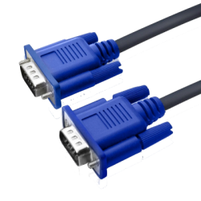
Digital connector DVI (Digital Video Interface)
The digital video transmission standard in DVI-I and DVI-A also enables analogue signal transmission. The cable connecting the monitor to the computer cannot be longer than 5m.
DVI-D
a truly digital image transmitted between the digital output of the graphics card and the digital input of the monitor.
DVI-A
used to connect a modern graphics card with DVI output to a monitor with analog input.
DVI-I
provides the ability to send an analog source signal to an analog monitor as well as a digital source signal to a digital monitor.
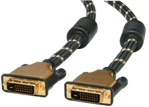
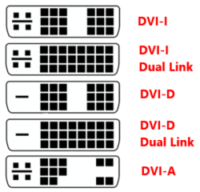
The difference between Single Link and Dual Link inputs is doubled in power, speed and transmission quality for Dual Link inputs.
Modern HDMI digital connectors and Display Port
HDMI connector (High Definition Multimedia Interface) is a digital standard for audio / video signal transmission enabling high definition (HD) transmission and multi-channel audio. We use it in DVD players, Blu-Ray, LCD and plasma TVs as well as game consoles. Maximum cable length: 15m.
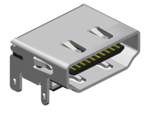
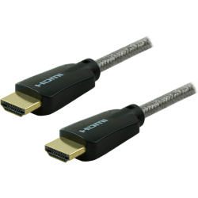
Display Port connector - the main purpose of the new standard is a computer-monitor or computer-home cinema system connection (including e.g. projectors, TV sets, etc.). DisplayPort already achieved in its first version 1.0 what HDMI managed to achieve only in version 1.3b, i.e.: maximum resolution of 2560x1600, 24 bit color depth, maximum signal throughput around 10 Gb / s. We are able to achieve full specification on a 15-meter cable, with longer cables the resolution is reduced to 1920x1080.
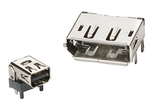
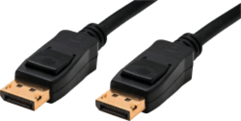
The future of monitors and displays?
Manufacturers are constantly trying to create new technologies that will provide even better parameters of the displayed image, while reducing production costs. What technology will master the market in the near future? What are the innovative methods of display construction?
PDP (Plasma Display Panel)
plasma cathode ray tubes use the properties of noble gases, which when excited by high voltage go into the state of so-called plasma. This reaction takes place simultaneously in several million pixels on the entire screen. Each pixel consists of three so-called sub-pixels for the primary colors: RGB (red, green and blue). The sub-pixel is a glass tube with xenon, at its ends there are electrodes to which high voltage is applied. A potential difference of several hundred volts converts gas into plasma, resulting in UV radiation. Ultraviolet radiation is not visible to humans, so a layer of phosphorus was placed, which when stimulated by this radiation emits visible light.
OLED (Organic Light-Emitting Diode)
so called organic LEDs. The discovery of an organic compound emitting visible light as a result of current flow was made in the University of Cambridge laboratory, but a real breakthrough in this technology took place in 2007. Sony has presented a small, flexible 2.5-inch display and an 11-inch TV with a resolution of 960 × 540 pixels and a contrast of 1,000,000: 1. It is only 3 mm thick! The receiver weighs about 2 kg and has an HDMI connector. The disadvantage of OLED displays is the limited lifetime of organic materials. The raw material for the production of luminous organic diodes is an organic polymer, previously known as a raw material for products made of foil and other materials. By placing such a conductive polymer between two electrodes, on which there is a potential difference, we obtain the current flow and the accompanying light radiation.
Source used
- Computer technology equipment. Handbook for learning the profession of an IT technician. Helion. Tomasz Kowalski
- Computer technology equipment. WSiP. Tomasz Marciniuk
- http://www.neurosoft.edu.pl/zgomolka/CRT_LCD.pdf
- Wikipedia.pl
- translate.google.com